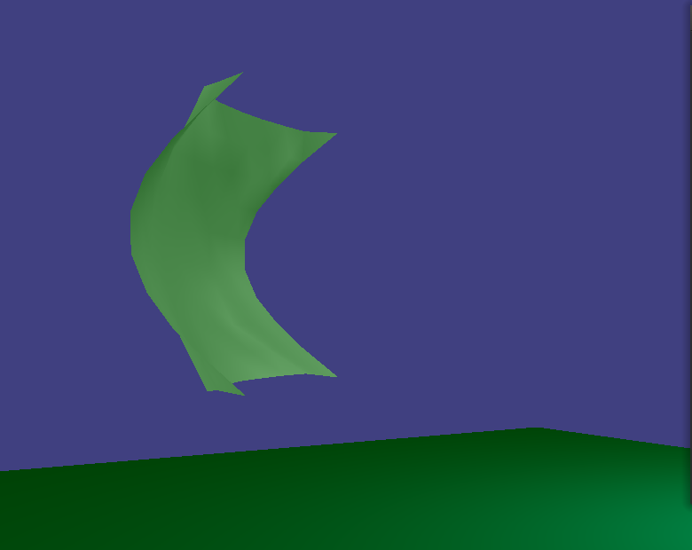
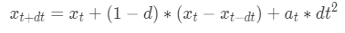
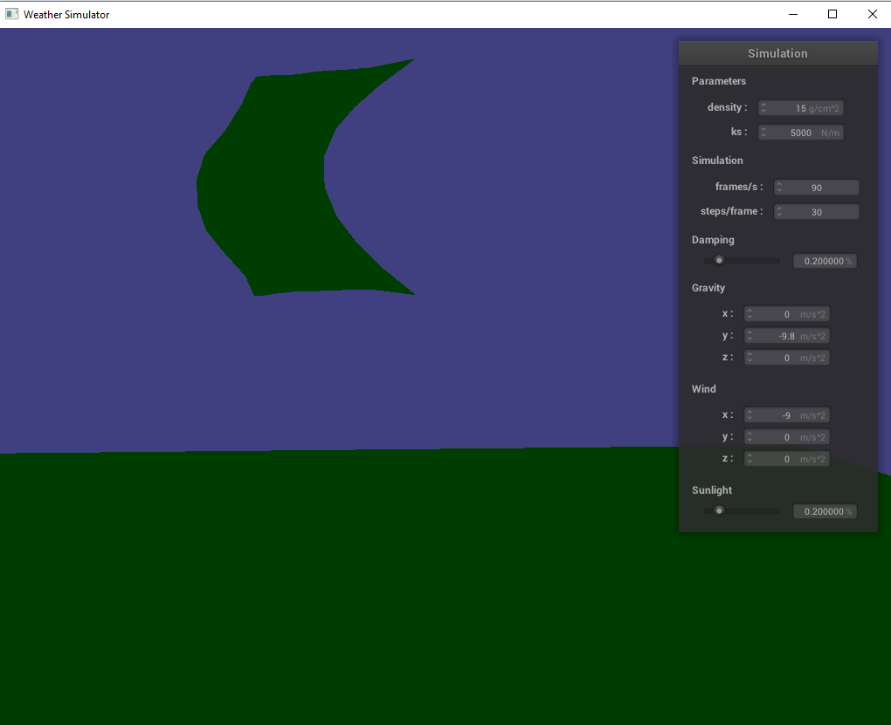
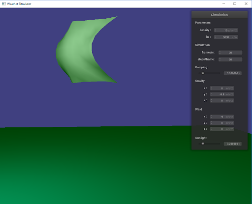
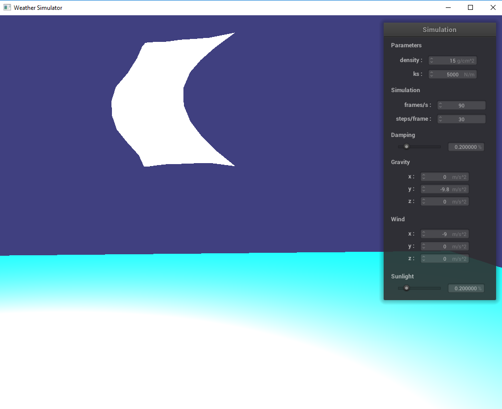
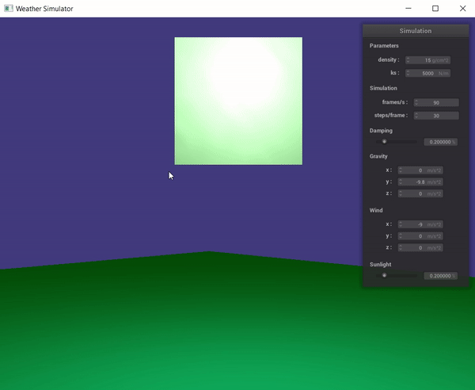
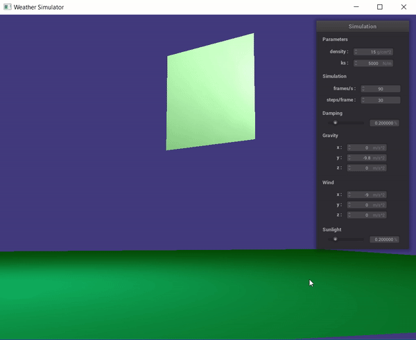

|  |
In our project, we constructed an environment simulator where the user is able to manipulate wind direction, wind speed, and light intensity.
Shaders/Light Intensity We wrote a .frag and .vert using GLSL to create a shader that simulated land and applied it to the environment. We added a kite to the simulation and gave it a smooth looking surface.
GUI Commands In order to allow the user to manipulate the scene, we added several GUI commands to the simulation.
(p) - Play the simulation
(m/s/e/w) - Change Wind Direction
(+/-) - Change Wind Speed
(l/k) - Increase and Decrease light intensity
Cloth (Point Masses and Springs) In order to model the kite and simulate wind acting on it appropriately, we constructed it using point masses, which can be described as areas of mass, whose positions change based on the forces we apply to them. Using Verlet Integration, and given a force, we computed the next position of the point masses using the following formula:
|

|
Wind Physics By giving a fixed mass to all point masses used to simulate the cloth, controlling wind physics was a matter of applying variations of wind force in the Verlet Integration Formula. With the exception of the *pinned point masses, all point masses were subjected to a wind force as opposed to natural gravity.
Problems:
Our initial desire for the project was to take the simulated cloth and attach it to a rigidbody that we'd model as a boat. Then, the wind would act on both the cloth and the boat, and the simulation would model the reaction of the boat to the wind, and not just the wind on the cloth itself. We made various attempts to get the boat into the scene. This included a conversion of a rigidbody into a .json file, the loading of a .dae file into the scene, and manipulations of models already loaded into the scene to resemble a boat. However, none of these attempts panned out into anything that was remotely usable, and we were left with the wind acting on the pinned cloth, a shader that we converted from resembling water to resembling land, and a light source with variable intensity.
Lessons Learned:
Despite not being able to realize the full vision we had for our project, our team learned a lot about the inner workings of GUI's, .json and .dae files, how to load a file into a scene, and how to build and apply shaders. We also learned that, in order to bring our vision into fruition in the future, we need to prioritize the most daunting tasks first. We made the mistake of saving the most challenging for last and it ended up being a mistake that cost us our initial vision for the project.
*Pinned : If we play the simulation, we notice that there exist four points on the kite that are less affected by the force. This was done purposely to create a kite, and the bending behavior of the kite is a demonstration of all of the point mass springs working together to maintain the general shape of the kite.The first table illustrates the spectrum of how sunny and bright a user can make the environment. If they want the scene to feel more like night time, then they would opt for something like Image 1-0, while if they want it to be noon and full brightness, then they might want something like Image 1-2.
|

|

|

|
This next table demonstrates the kite's movement against the wind. Wind can come from any and all directions. It can also come at varying intensities.
|

|

|
Video link
Slides link
Previous projects
Project 2
Khadijah Flowers - write-ups, wind, direction
Heesoo Jang - write-ups, wind
Anais Miller - write-ups, video editing, slides, blender boat and integration, water simulation, wind